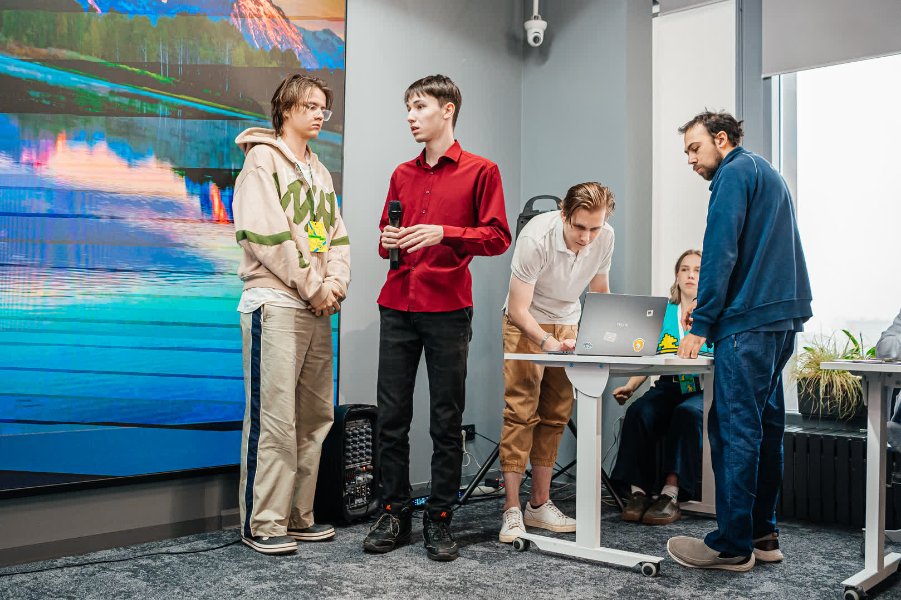
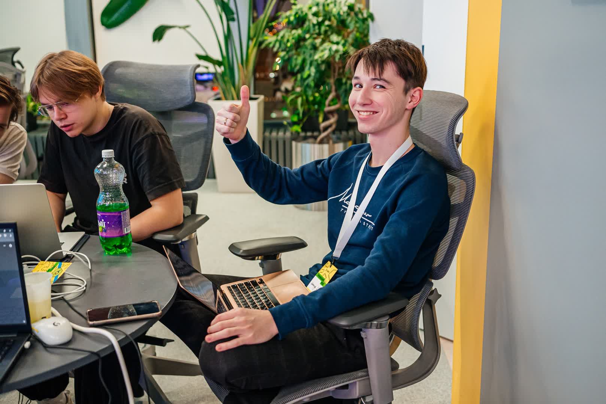
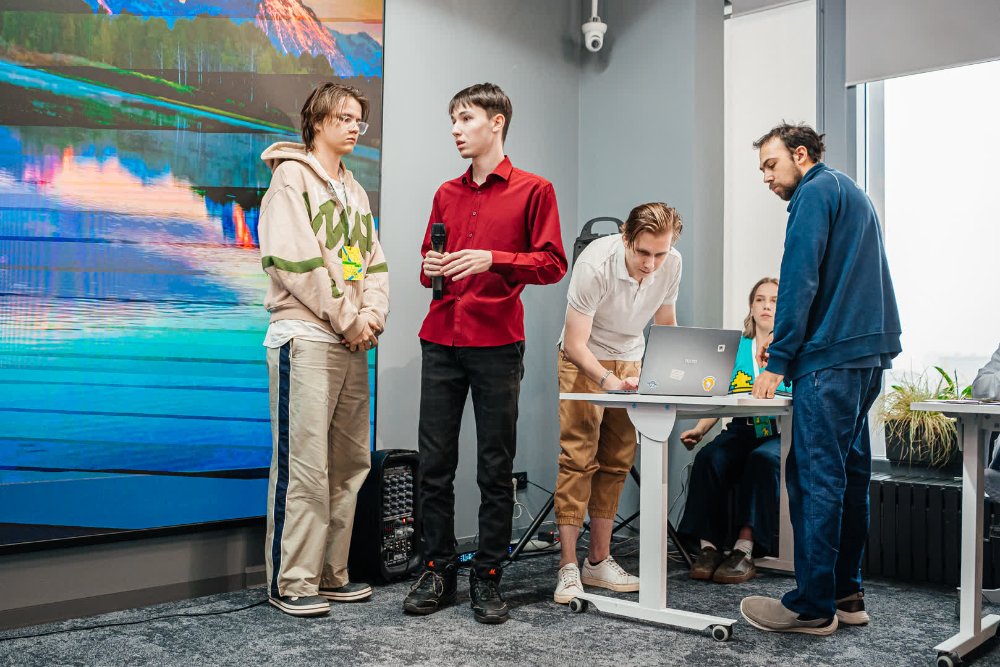
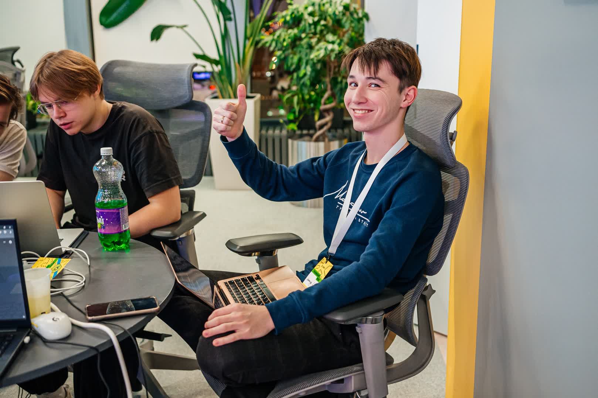

Привет, я Леонид
Backend Developer
Python & Java
Студент 3-го курса «Программной инженерии» в ЧелГУ. Специализируюсь на бэкенде, но имею крепкую базу в нативном JS и DOM, понимая веб-технологии «изнутри», а не только через фреймворки. Также создаю Desktop-приложения, боты и парсеры.
Технический стек
Backend & Core
Frontend & Tools
Опыт работы
Backend Developer / Automation
ООО ЮК “За результат”Разработка инструментов автоматизации и интеграция сервисов. Реализовано множество решений, среди ключевых:
- Desktop-приложение для юристов (Python + Pywebview + PHP) — программа для генерации документов по шаблонам с автоматической подстановкой данных клиентов. Позволила ускорить работу и увеличить клиентскую базу компании.
- Интеграция Bitrix24 API — синхронизация с ЮКасса: автоматическое создание счетов в Битриксе при оплате счета по ЮКасса. Синхронизация анкет на сайте компании с лидами и контактами в Bitrix в реальном времени. Настройка сценариев и бизнес-процессов. Система распределения клиентов между сотрудниками.
- Система автоматической отчетности — клиенты получают персонализированные отчеты о ходе работ в случае отпуска или отсутствия ответственного менеджера.
Freelance Developer
Периодически беру заказы параллельно с основной работой
- Разработка Telegram-ботов (Aiogram) со сложной сценарной логикой.
- Написание скриптов автоматизации бизнес-процессов.
- И так далее...
Проекты
Веб-приложение для умного поиска фото по описанию и лицам. Демонстрация Fullstack навыков: сложный Backend на Python и современный Frontend (React), реализованный с использованием AI-инструментов.
Разработан в рамках учебной практики в университете
Моя роль: Архитектура БД (pgvector), API моделей, контейнеризация.
Глубокое погружение в экосистему Java в рамках университетского курса. Реализация паттернов ООП и работа со строгой типизацией.
Конкурсы
Хакатон "Уральский код" 2025
3 место | 24 часа разработки
Кейс от УрФУ: Динамический планировщик образовательной траектории для магистратуры.
Веб-сервис для студентов, который связывает курсы с профессиональными навыками, визуализирует текущий прогресс через radar-диаграмму и подсказывает, какие дисциплины нужно выбрать для достижения целевой специальности. Моя роль: разработка Backend (FastAPI), проектирование БД (PostgreSQL), контейнеризация (Docker).

 


